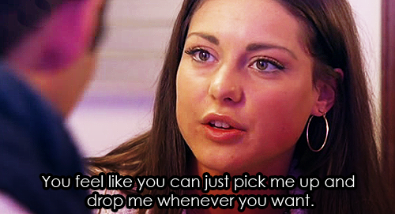

Intimacy, Identity and Ambivalence on Television with Faye Woods | Friday 18 November 2016, 6-8.30pm

An evening of telly and discussion, starting with the communal watching of an episode of E4’s Made in Chelsea, the reality television series that follows the lives, loves and “awks" of a group of bright young things living in London’s most exclusive postcodes.
Followed by a talk from Faye Woods, Lecturer in Film and Television at the University of Reading and author of the recently published, British Youth Television. Faye talked the audience through her research, and lead a discussion of the drama-filled reality soap Made in Chelsea.
In addition to her recent monograph, British Youth Television (2016), Faye’s work has appeared in a range of journals with recent publications including: 'Girls talk: authorship and authenticity in the reception of Lena Dunham's Girls' in Critical Studies in Television (2015) and 'Classed femininity, performativity, and camp in British structured reality programming' in Television and New Media (2014).
This event was part of Open Schools East's 2016 public programme, organised by associate artist Eleanor Davies.